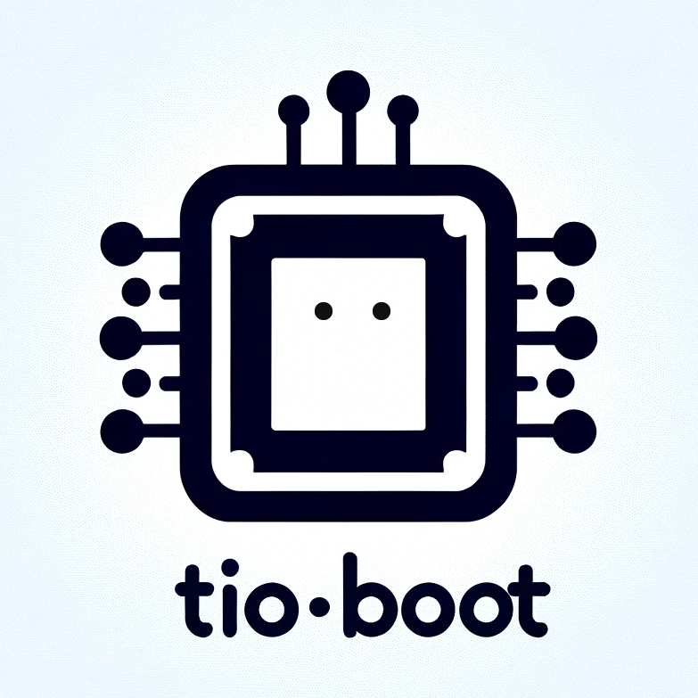

Tio-Boot
基于Java的快速开放框架
好用至上
简洁,好用,开发快,运行快,性能高
快速开发
去繁求减,返璞归真,轻装上阵,高效开发 ，其核心设计目标是开发迅速、代码量少、学习简单、功能强大、轻量级、易扩展、Restful。
节约时间
在拥有Java语言所有优势的同时再拥有 ruby、python 等动态语言的开发效率！为您节约更多时间，去陪恋人、家人和朋友 ;)

Tio Boot Docs基于Java的快速开放框架
简洁,好用,开发快,运行快,性能高
去繁求减,返璞归真,轻装上阵,高效开发 ，其核心设计目标是开发迅速、代码量少、学习简单、功能强大、轻量级、易扩展、Restful。
在拥有Java语言所有优势的同时再拥有 ruby、python 等动态语言的开发效率！为您节约更多时间，去陪恋人、家人和朋友 ;)
MIT Licensed | Copyright © 2023-present litongjava (opens new window)